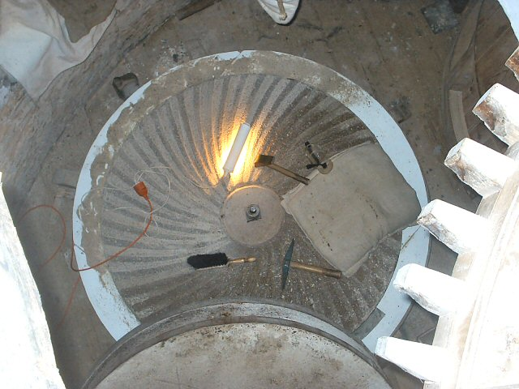

Stenen scherpen op korenmolen de Vier Winden te Monster

|  | |
 Deze pagina is gemaakt op 26-12-2006: Tijd: 12:15 uur.
Deze pagina is gemaakt op 26-12-2006: Tijd: 12:15 uur.

Laatste wijziging:
Met dank aan:
Garrit Hendriks/voor het gebruik van de foto's